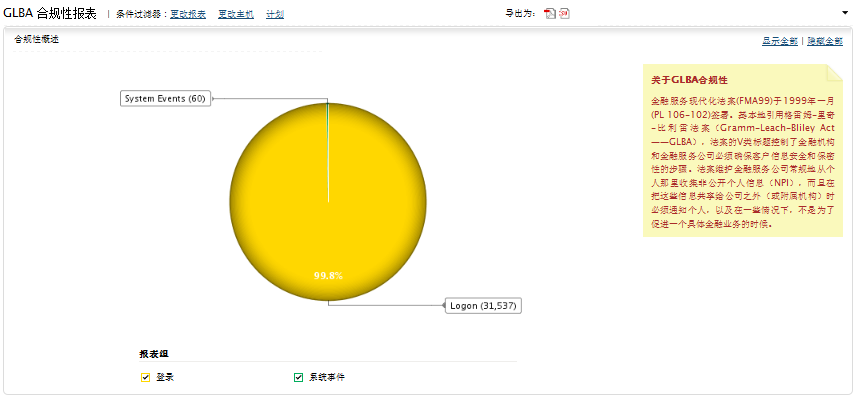

现代化金融服务法案（GLBA）合规性报表
现代化金融服务法案（GLBA）文档的501节明确指出法案要求金融机构保护“非公共的个人信息”。
作为GLBA法案要求的一部分，一个安全管理处理是必须存在，以便保护“未授权的访问，使用，泄露，修改，或者干涉系统操作”，也就是说为了有效监督，对于那些试图访问保存客户信息的系统和应用，需要产生报告并发生告警。

EventLog Analyzer可以帮助您遵循商业服务现代化法案（FMA99），通常称为Gramm-Leach-Bliley法案（GLBA）。法案的V部分明确规定了金融机构和金融服务器公司必须采取措施，保证客户信息的安全和保密性。
该法案还规定，金融服务公司定期从个人那里收集私人的非公开的信息时，必须告知个人在什么情况下，这些信息会在公司（或会员机构）之外共享，以及在与金融交易无关时，什么时候会使用这些信息。
501B (1)部分 - 系统事件
501B (2) & (3)部分 - 登录
- 成功的用户登录
- 成功的用户退出
- 不成功的用户登录
- 终端服务会话
|